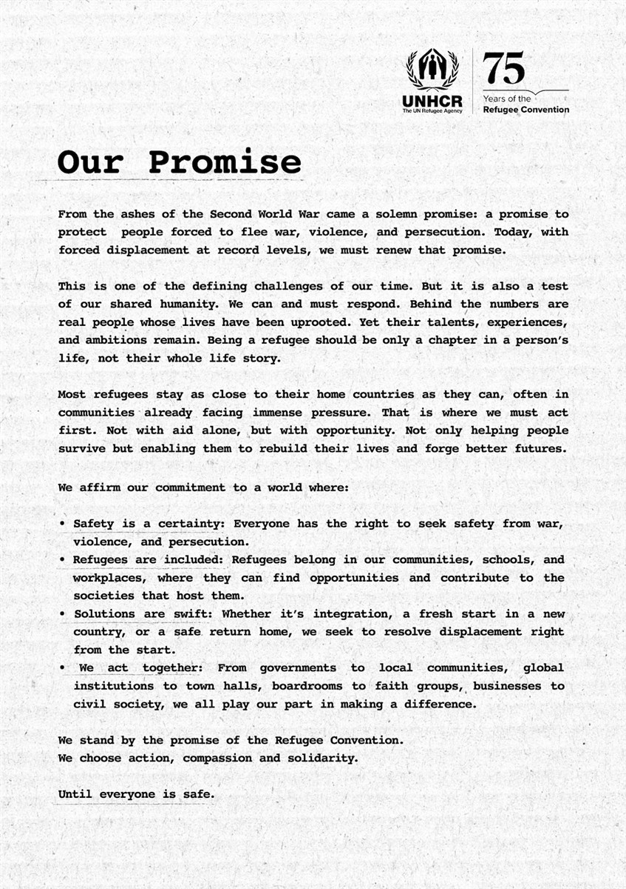
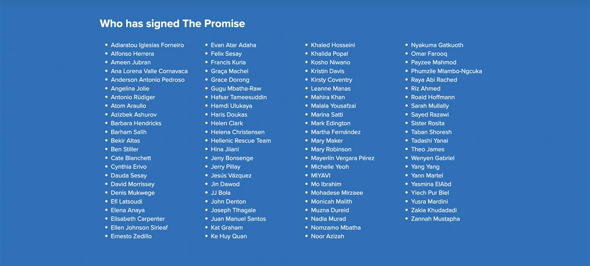

Sudanese refugee Hawa Ahmat Adam, 18, at her secondary school in the Farchana refugee camp in eastern Chad. © UNHCR/Ala Kheir
ON SOURCE: UNHCR

The Promise
A promise made 75 years ago.
A promise we must renew today.
Until everyone is safe.
From the ashes of the Second World War came a solemn promise: a promise to protect people forced to flee war, violence, and persecution. Today, with forced displacement at record levels, we must renew that promise.
This is one of the defining challenges of our time. But it is also a test of our shared humanity. We can and must respond.
Leaders from all walks of life are coming together to renew support for refugees. They’re lending their voices and their names to The Promise – a global statement of solidarity with refugees. They stand by the promise of the Refugee Convention together. They choose action, compassion and solidarity. Until everyone is safe.


READ MORE ABOUT THE PROMISE
ON SOURCE: UNHCR